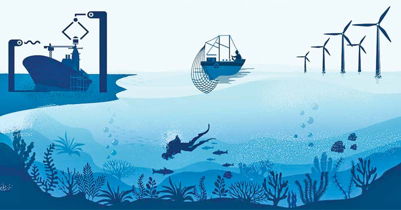

LIFE BELOW WATER
Optimizing Economic Gains through Sustainable Management of Marine Resources
In an era of increasing environmental awareness, the sustainable management of marine resources has emerged as a pivotal strategy for optimizing economic gains. Oceans and seas provide a multitude of resources that are essential to various industries, including fisheries, tourism, and energy. By adopting sustainable practices, we can ensure that these resources are utilized efficiently and responsibly, promoting economic growth while preserving marine ecosystems. This approach not only enhances the long-term viability of marine industries but also supports the livelihoods of coastal communities, ensuring a balanced and prosperous relationship between economic development and environmental stewardship
Maximizing Economic Benefits through Marine Resource Conservation
The conservation of marine resources is not just an environmental imperative but also an economic opportunity. By adopting sustainable practices, we can ensure that our oceans continue to provide vital resources and services that contribute to economic growth. This approach emphasizes the need for balanced exploitation of marine resources, ensuring long-term economic benefits while preserving the health of marine ecosystems. Effective conservation strategies can lead to increased productivity, job creation, and enhanced livelihoods for communities dependent on marine resources.
Sustainable Fisheries: A Pathway to Economic Prosperity
Sustainable fisheries management is crucial for maintaining the delicate balance between marine biodiversity and economic growth. Overfishing and destructive fishing practices have long-term detrimental effects on fish populations and the marine environment, leading to economic losses. By implementing sustainable fishing practices, we can ensure the regeneration of fish stocks, secure food supplies, and create stable economic conditions for fishing communities. Sustainable fisheries are not just about protecting the environment;they are about fostering economic resilience and prosperity.
Innovative Approaches to Harnessing Marine Resources for Economic Development
The marine environment offers a wealth of resources that, if harnessed innovatively and sustainably, can drive significant economic development. From renewable energy sources like offshore wind and tidal power to sustainable aquaculture and eco-tourism, the potential for economic growth is vast. Innovative approaches to utilizing marine resources focus on sustainability, ensuring that economic activities do not compromise the health of marine ecosystems. By embracing new technologies and practices, we can unlock the economic potential of the blue economy while safeguarding marine biodiversity for future generations.